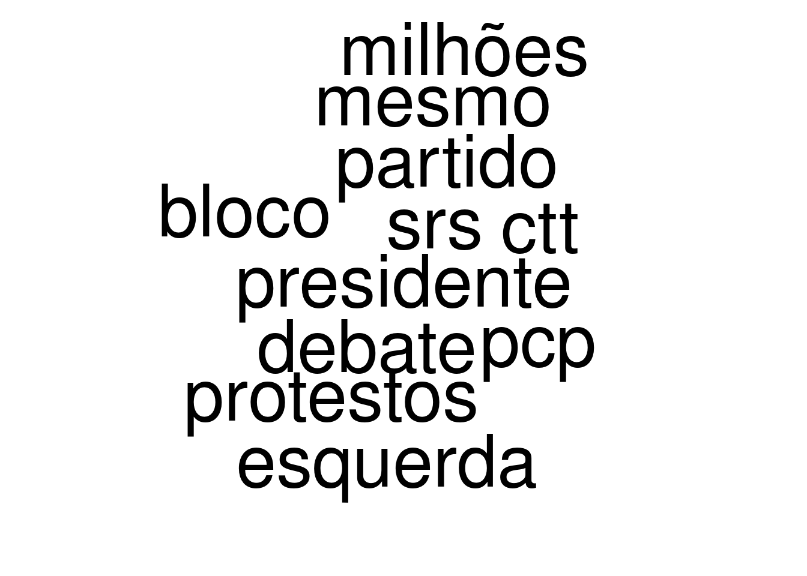

Extracting keywords from Parliament Discussions Interventions
2020-11-04
1 Parsing Parliament Discussion’s Documents
Let’s consider each intervention as a document, and therefore the corpus is the union of all interventions in a given session
1.1 Trying extracting Intervinients
# Get the entities
deputies_and_president = set()
file_path = os.path.join(PROJHOME,"..","resources/example_of_parlamentar_discussion/darl14sl02n014.txt")
with open(file_path) as file:
pattern = re.compile(REGEX_TO_SPLIT_DOCUMENTS)
for line in file:
match = pattern.search(line)
if match is not None:
deputies_and_president.add(match.group()[0:-3])
for el in sorted(deputies_and_president):
print(el)## A Sr.ª Alexandra Viera (BE)
## A Sr.ª Bebiana Cunha (PAN)
## A Sr.ª Carla Madureira (PSD)
## A Sr.ª Catarina Rocha Ferreira (PSD)
## A Sr.ª Clarisse Campos (PS)
## A Sr.ª Cristina Mendes da Silva (PS)
## A Sr.ª Diana Ferreira (PCP)
## A Sr.ª Emília Cerqueira (PSD)
## A Sr.ª Fabíola Cardoso (BE)
## A Sr.ª Inês de Sousa Real (PAN)
## A Sr.ª Isabel Pires (BE)
## A Sr.ª Lina Lopes (PSD)
## A Sr.ª Mariana Silva (PEV)
## A Sr.ª Sandra Cunha (BE)
## A Sr.ª Secretária (Maria da Luz Rosinha)
## A Sr.ª Sofia Matos (PSD)
## O Sr. André Ventura (CH)
## O Sr. Bruno Dias (PCP)
## O Sr. Cristóvão Norte (PSD)
## O Sr. Duarte Alves (PCP)
## O Sr. Hugo Carvalho (PS)
## O Sr. Jerónimo de Sousa (PCP)
## O Sr. Jorge Costa (BE)
## O Sr. Jorge Salgueiro Mendes (PSD)
## O Sr. José Luís Ferreira (PEV)
## O Sr. José Moura Soeiro (BE)
## O Sr. João Cotrim de Figueiredo (IL)
## O Sr. João Dias (PCP)
## O Sr. João Gonçalves Pereira (CDS-PP)
## O Sr. João Oliveira (PCP)
## O Sr. João Pinho de Almeida (CDS-PP)
## O Sr. Nelson Basílio Silva (PAN)
## O Sr. Nuno Fazenda (PS)
## O Sr. Pedro do Carmo (PS)
## O Sr. Presidente
## O Sr. Presidente (José Manuel Pureza)
## O Sr. Ricardo Vicente (BE)
## O Sr. Tiago Barbosa Ribeiro (PS)## 381.2 Let’s try to create the list of (Intervinient, Intervention) and its mappings
# Associate documents to entity
deputies_docs_unprocessed = {}
documents_unprocessed_idx = {}
documents_to_deputies = {}
doc_idx = 0
did_first_match = False
with open(file_path) as file:
first_line = next(file)
DATE_SECTION_REGEX = "(?i)\d+ de (\w+) de \d{4}"
romanic_number = "(?=[MDCLXVI])M*(C[MD]|D?C{0,3})(X[CL]|L?X{0,3})(I[XV]|V?I{0,3})"
SERIES_SECTION_REGEX = romanic_number + " (Série|SÉRIE) — (Número|NÚMERO) \d{1,3}"
pattern = re.compile(REGEX_TO_SPLIT_DOCUMENTS)
date_section_pattern = re.compile(DATE_SECTION_REGEX)
series_section_pattern = re.compile(SERIES_SECTION_REGEX)
numberic_pattern = re.compile("\d+")
current_docs = ""
current_deputy = None
for line in file:
date_section_match = date_section_pattern.search(line)
series_section_match = series_section_pattern.search(line)
if date_section_match is not None or series_section_match is not None:
#we are in a section, let's consume until a number appear
line_is_page_number = False
while not line_is_page_number:
#check if line is number
#if it is, then line_is_page_number = True
line = next(file)
numeric_match = numberic_pattern.search(line)
if numeric_match is not None:
line_is_page_number = True
line = next(file)
match = pattern.search(line)
if match is not None:
#a new document
#is this the first one? if it is, then we already consumed the summary section
if current_deputy is not None:
#save current document
documents_unprocessed_idx[doc_idx] = current_docs
if current_deputy not in deputies_docs_unprocessed:
deputies_docs_unprocessed[current_deputy] = []
deputies_docs_unprocessed[current_deputy].append(doc_idx)
documents_to_deputies[doc_idx] = current_deputy
doc_idx += 1
#docs stored. start processing new one
current_deputy = match.group()[0:-3]
current_docs = line.replace(current_deputy, '')
else:
current_docs += line
if current_deputy is not None:
#save current document
documents_unprocessed_idx[doc_idx] = current_docs
if current_deputy not in deputies_docs_unprocessed:
deputies_docs_unprocessed[current_deputy] = []
deputies_docs_unprocessed[current_deputy].append(doc_idx)
documents_to_deputies[doc_idx] = current_deputy
doc_idx += 1
1.3 Keyword Extraction
In this notebook, we are going to point out on trying two python packages for keyword extraction: - (YAKE)[https://github.com/LIAAD/yake] - (pke)[https://github.com/boudinfl/pke]
Let’s start with YAKE
1.3.1
import yake
from typing import List, Tuple, Dict
sys.path.insert(0, os.path.join(PROJHOME,"modules"))
from parliament_discussions_document_parser import ParliamentDiscussionsDocumentParserparliament_discussion_document_path = os.path.join(
PROJHOME,"..","resources/example_of_parlamentar_discussion/darl14sl02n014.txt"
)
deputies_docs_unprocessed, documents_unprocessed_idx, documents_to_deputies = ParliamentDiscussionsDocumentParser(
parliament_discussion_document_path).parse()def concatenate_all_interventions(interventions_idx: List[int], interventions_idx_map: Dict[int, str]):
concatenated_interventions = ""
for idx in interventions_idx:
concatenated_interventions += interventions_idx_map[idx] + "\n"
return concatenated_interventions## dict_keys(['O Sr. Presidente', 'A Sr.ª Secretária (Maria da Luz Rosinha)', 'A Sr.ª Inês de Sousa Real (PAN)', 'O Sr. João Dias (PCP)', 'O Sr. Jerónimo de Sousa (PCP)', 'A Sr.ª Mariana Silva (PEV)', 'A Sr.ª Catarina Rocha Ferreira (PSD)', 'O Sr. João Gonçalves Pereira (CDS-PP)', 'O Sr. Ricardo Vicente (BE)', 'A Sr.ª Alexandra Viera (BE)', 'A Sr.ª Clarisse Campos (PS)', 'O Sr. Pedro do Carmo (PS)', 'O Sr. André Ventura (CH)', 'O Sr. João Oliveira (PCP)', 'A Sr.ª Emília Cerqueira (PSD)', 'O Sr. José Luís Ferreira (PEV)', 'O Sr. Bruno Dias (PCP)', 'O Sr. Duarte Alves (PCP)', 'A Sr.ª Isabel Pires (BE)', 'O Sr. João Cotrim de Figueiredo (IL)', 'A Sr.ª Sofia Matos (PSD)', 'O Sr. Hugo Carvalho (PS)', 'O Sr. Cristóvão Norte (PSD)', 'O Sr. João Pinho de Almeida (CDS-PP)', 'A Sr.ª Sandra Cunha (BE)', 'O Sr. Jorge Salgueiro Mendes (PSD)', 'O Sr. Nuno Fazenda (PS)', 'O Sr. Nelson Basílio Silva (PAN)', 'O Sr. Presidente (José Manuel Pureza)', 'A Sr.ª Fabíola Cardoso (BE)', 'A Sr.ª Carla Madureira (PSD)', 'A Sr.ª Cristina Mendes da Silva (PS)', 'A Sr.ª Diana Ferreira (PCP)', 'A Sr.ª Bebiana Cunha (PAN)', 'O Sr. José Moura Soeiro (BE)', 'O Sr. Jorge Costa (BE)', 'A Sr.ª Lina Lopes (PSD)', 'O Sr. Tiago Barbosa Ribeiro (PS)'])## : — Muito bem!def generate_keywords_from(intervinient: str, lan: str = "pt", ngram: int = 5, deduplicate_threshold = 0.5):
text = concatenate_all_interventions(deputies_docs_unprocessed[intervinient], documents_unprocessed_idx)
kw_extractor = yake.KeywordExtractor(lan=lan,n=ngram,dedupLim=deduplicate_threshold)
return dict(kw_extractor.extract_keywords(text))#df_keywords = reticulate::py_capture_output("generate_keywords_from('O Sr. André Ventura (CH)')")
df_keywords = as.data.frame(t(as.data.frame(reticulate::py$generate_keywords_from('O Sr. André Ventura (CH)'))))
df_keywords$keywords = c(rownames(df_keywords))
colnames(df_keywords) = c("scores","keywords")
df_keywords$scores = df_keywords$scores/min(df_keywords$scores) - min(df_keywords$scores/min(df_keywords$scores))*1000
colnames(df_keywords) = c("freq","word")df_keywords %>%
echarts4r::e_color_range(freq, color) %>%
echarts4r::e_charts() %>%
echarts4r::e_cloud(word, freq, color, shape = "circle", sizeRange = c(3, 15)) %>%
echarts4r::e_title("Wordcloud", "Random strings")## Warning in wordcloud::wordcloud(df_keywords$word, df_keywords$freq):
## deputado.joão.cotrim.de.figueiredo could not be fit on page. It will not be
## plotted.## Warning in wordcloud::wordcloud(df_keywords$word, df_keywords$freq):
## partido.socialista could not be fit on page. It will not be plotted.## Warning in wordcloud::wordcloud(df_keywords$word, df_keywords$freq):
## pcp.e.de.deputados could not be fit on page. It will not be plotted.## Warning in wordcloud::wordcloud(df_keywords$word, df_keywords$freq):
## esquerda.e.o.pcp could not be fit on page. It will not be plotted.## Warning in wordcloud::wordcloud(df_keywords$word, df_keywords$freq):
## mesmo.governo.socialista could not be fit on page. It will not be plotted.## Warning in wordcloud::wordcloud(df_keywords$word, df_keywords$freq):
## bloco.de.esquerda could not be fit on page. It will not be plotted.## Warning in wordcloud::wordcloud(df_keywords$word, df_keywords$freq): presidente
## could not be fit on page. It will not be plotted.## Warning in wordcloud::wordcloud(df_keywords$word, df_keywords$freq):
## socialista.para.fazer.o.mesmo could not be fit on page. It will not be plotted.## Warning in wordcloud::wordcloud(df_keywords$word, df_keywords$freq):
## joão.azevedo.castro could not be fit on page. It will not be plotted.
generate_wordcloud_from_intervinient <- function(intervinient, ngram=3){
df_keywords = as.data.frame(t(as.data.frame(reticulate::py$generate_keywords_from(intervinient, ngram=as.integer(ngram)))))
df_keywords$keywords = c(rownames(df_keywords))
colnames(df_keywords) = c("scores","keywords")
df_keywords$scores = df_keywords$scores*-1
df_keywords$scores = sqrt(df_keywords$scores - min(df_keywords$scores))
colnames(df_keywords) = c("freq","word")
print(df_keywords)
d <- data.frame(word = rownames(df_keywords), freq = df_keywords$freq)
return(wordcloud2::wordcloud2(d,size = .3))
}